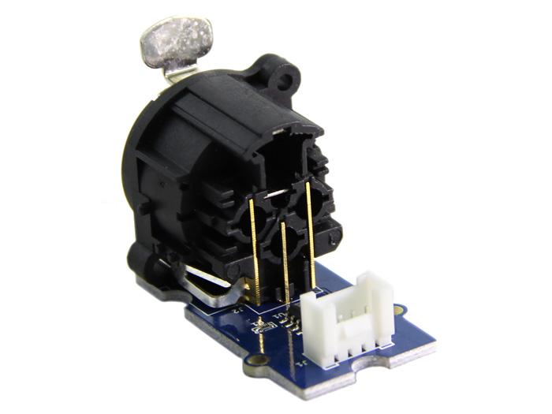
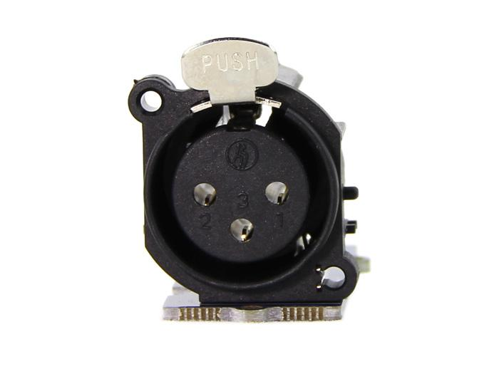
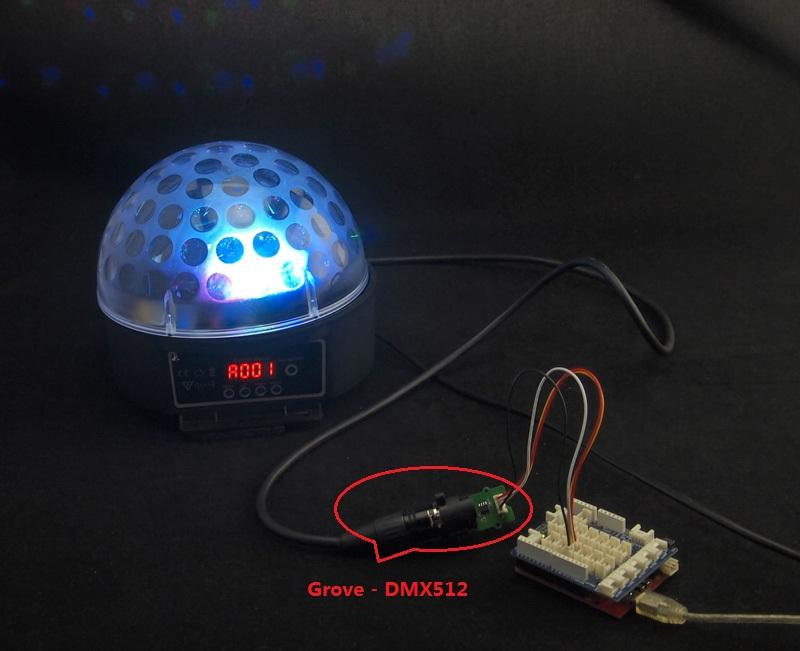

Grove - DMX512
The Grove – DMX512 is a adapter from Grove interface to DMX512 interface(industry standard EIA-485 interface. The module is based on SN75176 chip which can balance transmission lines and meet ANSI Standard EIA-485 interface. Now it is convenience to control stage lighting and DMX512 console for Arduino.
Model: ACC05071P

Feature
- Grove Interface and standard EIA-485 interface
- Easy to use
- Strong practicability
Usage
Arduino can easily control DMX512 device by using the Grove - DXM512 module. Take the LED crystal magic ball light as an example. The Specific Operation as follows:
- Connect Grove interface of Grove - DMX512 to D3 port of Grove - Base Shield and plug Grove - Base Shield to Arduino.
- Connect DMX512 interface of Grove - DMX512 to the DMXIN interface of the LED crystal magic ball light using a DMX cable. And power for the LED crystal magic ball light.
- Set the LED crystal magic ball light to DMX512 control mode. The control panel display "A001" at the moment.

- Download File: DmxSimple Library and Unzip it into the libraries file of Arduino IDE by the path: ..\arduino-1.0.1\libraries.
- Open the code directly by the path:File -> Example ->DmxSimple->Fadup1.
- You can see a interesting scene. Try to change code for your enjoy.
Resources
SN75176 Datasheet
Grove - DMX512 Eagle File
DmxSimple Library
Support
If you have questions or other better design ideas, you can go to our forum or wish to discuss.
Copyright (c) 2008-2016 Seeed Development Limited (
www.seeedstudio.com /
www.seeed.cc)
This static html page was created from http://www.seeedstudio.com/wiki